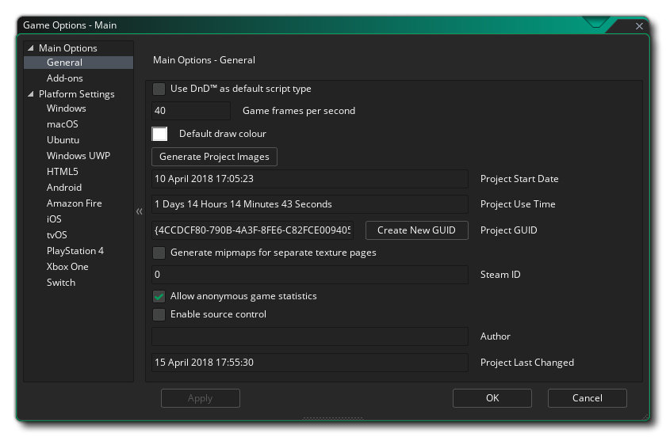

游戏选项分为两个部分，主要选项 和 平台设置。 主要选项的详细信息在以下部分中给出：

你可以在 常规选项 窗口中设置将影响游戏的某些内容，而不管其运行的平台是什么。 该窗口包含以下部分：
- 默认使用 DnD™ 脚本： 勾选此选项后，将使用 DnD™ 编辑器而不是代码编辑器打开所有新脚本和物体事件。
- 每秒游戏帧数(FPS)： 此值设置 GameMaker Studio 2 在运行时应尝试保持游戏的每秒帧数限制。此值表示游戏循环将在一秒钟内运行的次数（单个游戏循环被视为单个 “帧”）并设置为默认值 30，尽管通常也使用 60。关于哪个房间速度是理想的，有很多争论，但实际的答案取决于你正在制作什么类型的游戏、房间的大小、实例的数量以及代码的密集程度。例如，如果你有一个大房间和 30 的房间速度，游戏可能会显得 “波涛汹涌”，因为你正在看的区域越大，眼睛就越容易感知低房间速度，但是如果游戏密集然后将房间速度设置为 100 可能导致游戏 “滞后”，因为 fps 由于处理量的增加而下降。所以要注意这个值，并尝试始终根据游戏需要调整它。
- 默认绘制颜色： 使用代码未设置颜色时绘制文本或窗口(?)（以及其他内容）的默认颜色。
- 生成项目图片: 单击此按钮将打开 项目图像生成器 工具。
- 项目起始日期： 项目启动的日期。
- 项目用时： 自你启动项目以来经过的时间长度。
- 项目 GUID： 这是为 GameMaker Studio 2 中的每个项目创建的唯一标识符。如果要更改此项，可以单击 创建新的GUID 按钮以生成新项。
- 为单独的纹理页生成多级渐进纹理（mipmap）： 此选项将让 GameMaker Studio 2 为在精灵编辑器的 纹理设置 中标记了 单独的纹理页 选项的精灵创建多级纹理渐进。启用多级纹理渐进意味着精灵的原始纹理页将被缩放并在纹理文件中过滤为多个分辨率。理页，则仍可以从纹理组管理器基于每个这通常是关闭的，但是如果你使用视图放大或缩小游戏房间的大部分区域，或者你正在制作 3D 游戏，那么你可能想要启用此功能，然后使用 多级纹理渐进函数 来调整游戏处理不同的多级纹理渐进级别。请注意，如果你没有将精灵标记为使用单独的纹理页，则仍可以从 纹理组管理器 基于每个纹理组启用多级纹理渐进。该选项默认为关。
- Steam ID： 如果你要创建要通过 Steam 分发的游戏，则需要在此处提供 Steam App ID。使用此选项时，请确保已在 平台首选项 中添加了 Steamworks SDK 的路径，并确保在 Steamworks 仪表板 上正确设置了所有内容。
- 允许匿名游戏统计： 启用或禁用从 IDE 和你创建的游戏向 YoYo Games 发送 GameMaker Studio 2 游戏分析数据。启用后，这将发送有关运行程序 / 游戏的 PC 的匿名数据（监视器大小、CPU、GPU、内存等等），最终的可执行文件也将发送有关游戏内容的数据。这些数据正在积累，以便 YoYo Games 可以更好地针对用户的需求定位他们的服务，并且在未来 YoYo Games 希望将这些数据提供给开发人员（就像 Steam 对他们的 Steam 软件调查 一样）。有关详细信息，请参阅 YoYo 游戏隐私政策 章节的第 6 部分 我们收集的信息。此选项仅适用于具有 付费许可（桌面，移动，HTML5，UWP或控制台）的用户，具有试用许可的用户将始终发送匿名统计数据。
- 启用源代码管理：如果你希望项目位于 SCM（源代码管理）下，则需要进行勾选。它默认是关闭的（有关源代码管理的更多信息，请参见 此处）。
- 作者： 游戏作者（或出版商 / 工作室）的名称。
- 项目最后更改： 此部分仅显示上次更改项目的日期 / 时间戳（这是 不可 编辑的）。

如果你希望在特定平台上使用排行榜或应用内购买等扩展功能，GameMaker Studio 2 需要安装某些附加组件作为项目的扩展。 单击 下载 按钮将下载扩展并将其安装在当前项目中，随时可以使用。
资源树还将提供其他游戏选项，具体取决于你拥有的 许可 可用的目标平台，而不是所有这些平台都可用或可见。 存在以下平台选项：